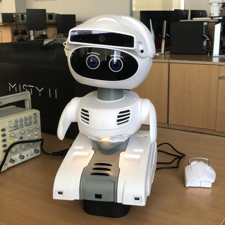

Misty Robot

Misty is a pre-built robot I have programmed for human interaction and autonomous behaviours. The project combines Misty's onboard camera, voice features, and movement capabilities.
Project work
I developed a receptionist flow that reads QR codes, answers guest questions, and records guest check-ins in a database. I also explored Misty's example behaviours for detecting and following people, either by driving toward them or turning to keep them in view.
The work has been presented at two events in Newcastle, demonstrating the receptionist program alongside other capabilities provided by Misty's manufacturer.